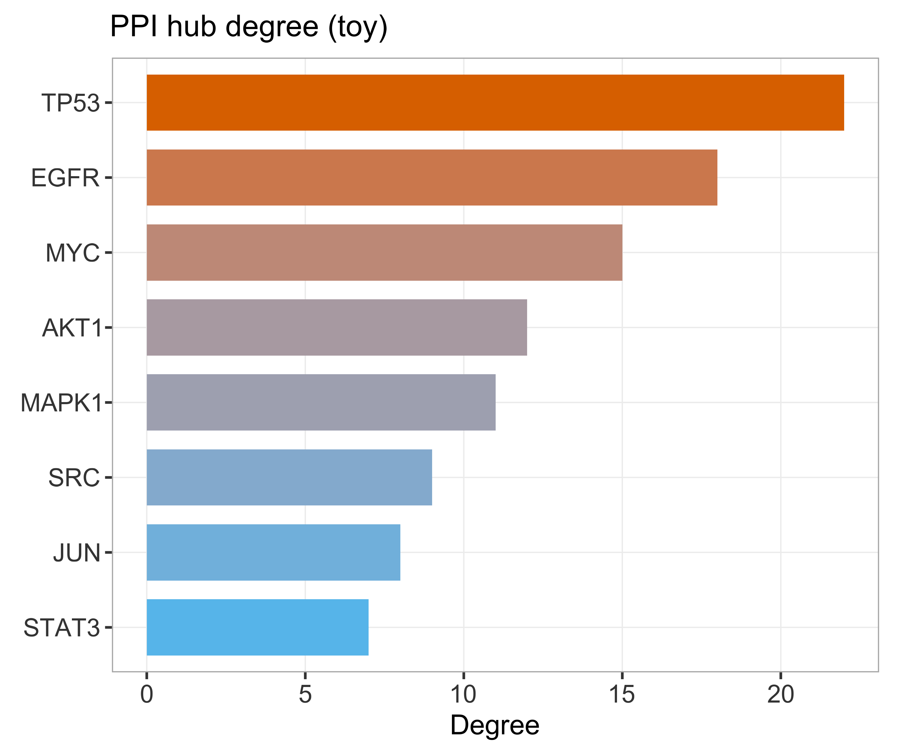
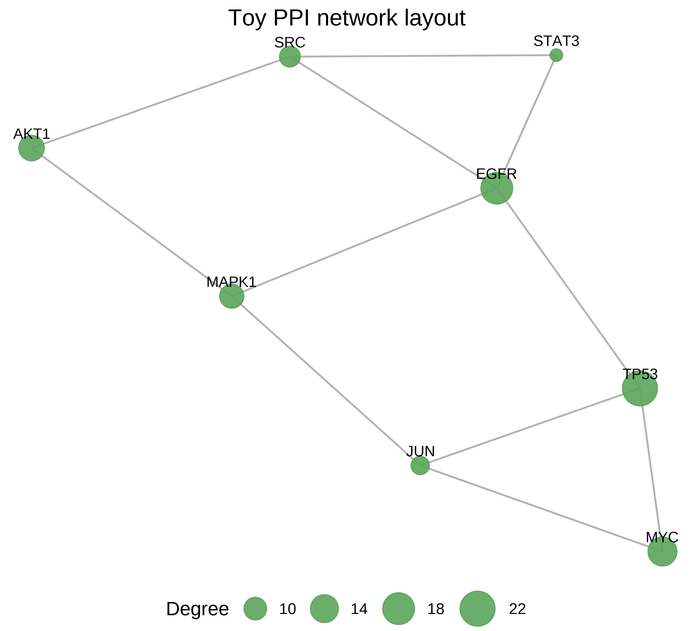

状态：PASS
已 source 本技能 脚本_scripts/: 运行骨架_runSkeleton.R
data_provenance: TOY：可复现模拟，不可外推。
详见 数据文件/DATA_SOURCE.md。
"skill","stage","n_rows","n_cols","n_samples","group_source","toy","data_provenance","accession","sourced_skill_scripts","notes","checked_at" "PPI-Network","post",8,2,NA,"toy PPI",TRUE,"TOY",NA,"已 source 本技能 脚本_scripts/: 运行骨架_runSkeleton.R","hub+network; data_provenance=TOY","2026-07-18 21:28:36"


TOY PPI：枢纽度 + 网络布局。data_provenance=TOY。
生成时间：2026-07-18 21:28:37 · 报告规范：统一交付规范_DeliveryStandards · 版本 v1